Лучшие пушки
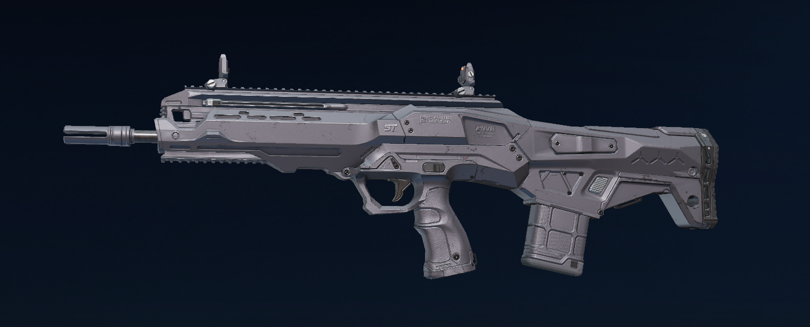
Втурмовая винтовка AR97 стреляет очередями по 3 выстола если её улучшить, то она станет тихой, точной и будет наносить много урона.
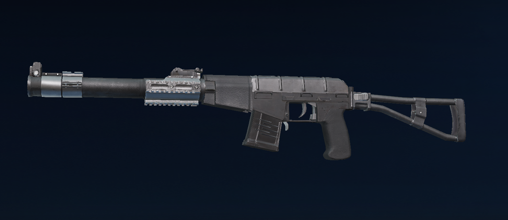
Штурмовая винтовка vss не очать скоростельна, но она тихая и наносит много урона.
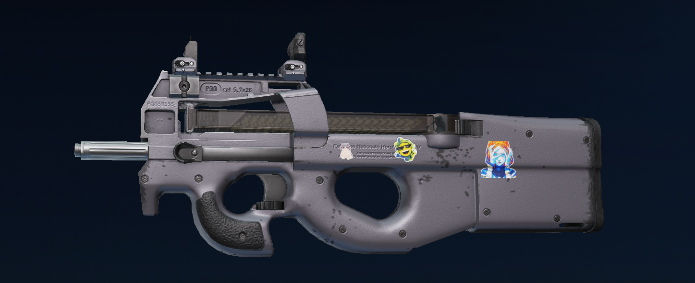
Пистолет-пулемёт P90 очень скорострельный и если его улучшить, то он будет точным.
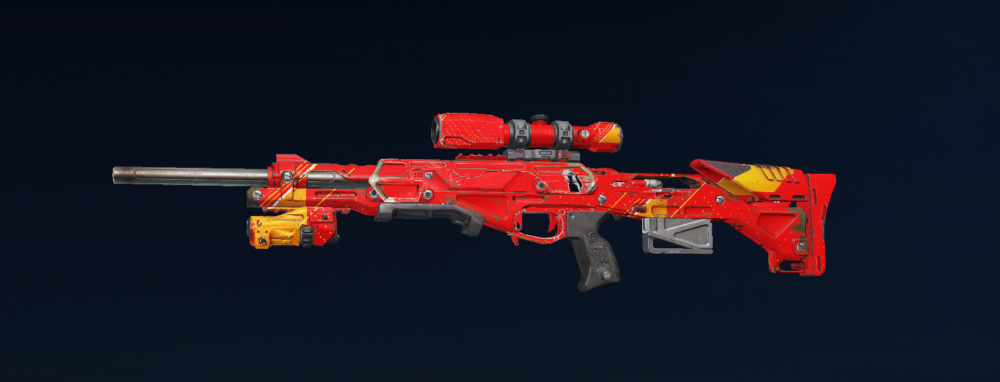
Снайперская винтовка Kala очень точная, если её улучшить , то она сможет стрелять на половину карты!!!
Карты
1. Остров проклятых

Карта остров проклятых - это небольшой остров. Самая опасная его часть это центр карты. Там всегда много опытных игроков!!!
2. Пляж Небоскрёб
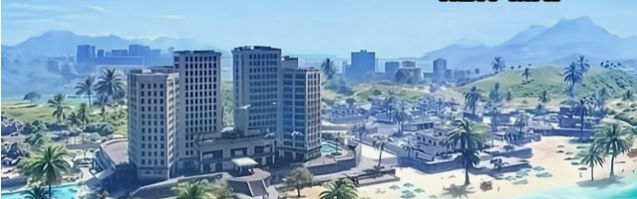
Это карта очень большая. В больших населённых пунктах много опытных игоков, но там можно найти много хорошего оружия
Персонажи
1. SPIKE
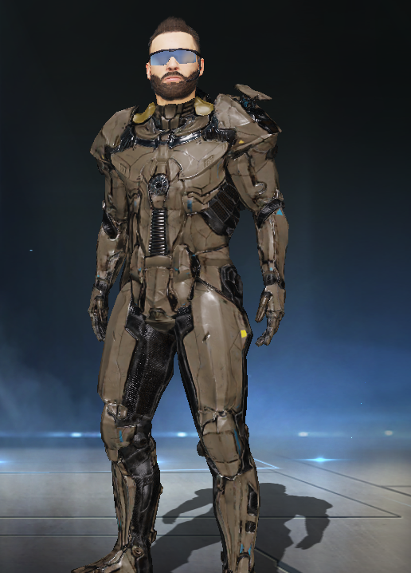
У персонажа SPIKE есть удивительная способность, он может на несколькл секунд создавать своего двойника и при этом становиться практически невидемым. При использовании способности он он становиться быстрее.
2. ETHAN
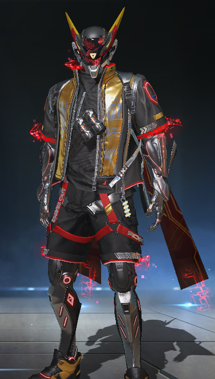
У ETHAN есть две спосодности: 1.ETHAN ставит перед собой щит, но его можно сломать. 2.ETHAN может ускорить себя.
3. NOVA
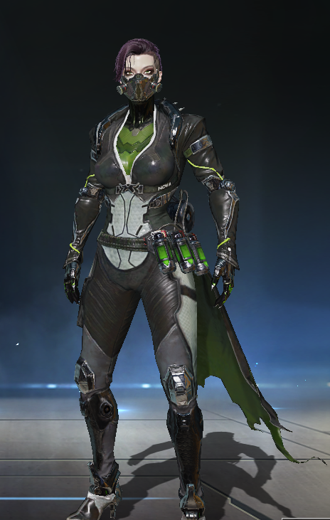
Персонаж NOVA может кинуть ядовитую гранату, которая отнимает жизни только у вагов.
4. E.M.T.
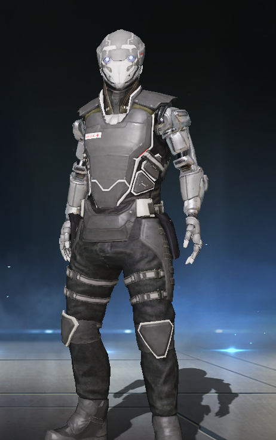
Персонаж E.M.T. во-первых может запускать дрон, который создаёт барьер вокруг игрока, а во-вторых он может кинуть гранату, которая вылечивает игрока.
Скины
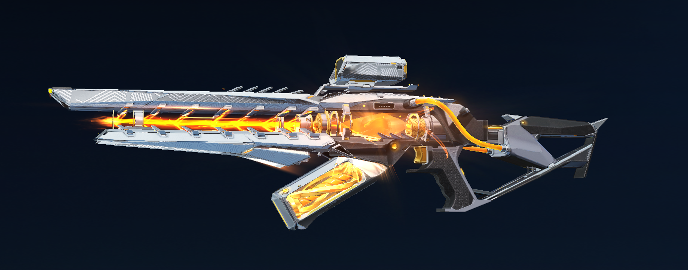
Это скин на KAG-6 - Мерцающий Свет
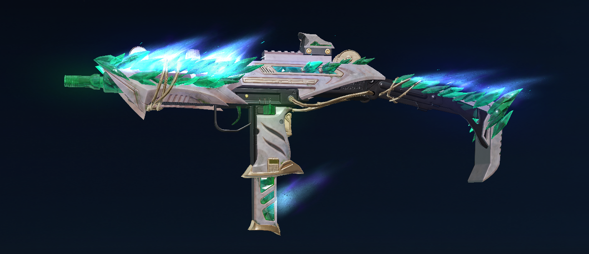
Это скин на Uzi - Нефритовый Шип
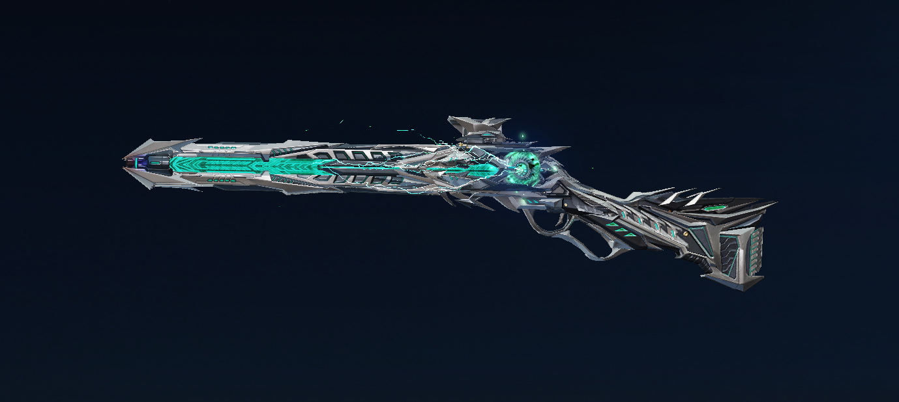
Это скин на M1887 - Пламя Преисподней
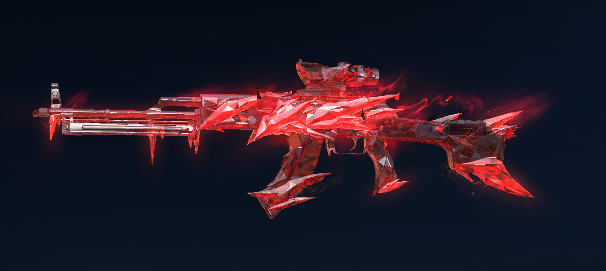
Это скин на РПК - Киноварная тешина
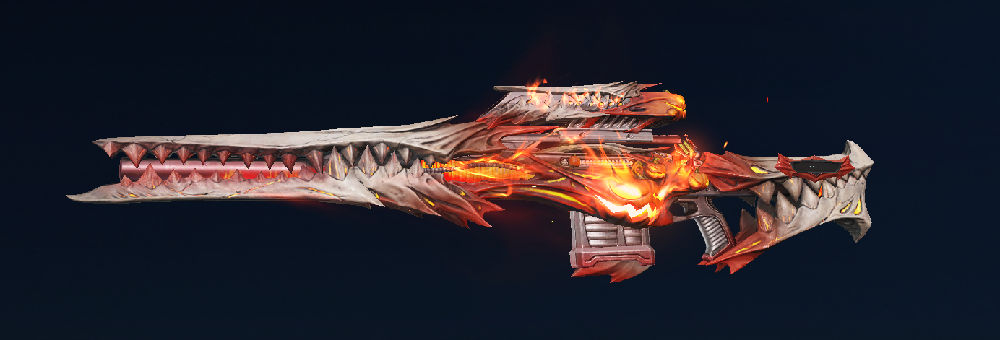
Это скин на M82 - Тыквенный рыцарь
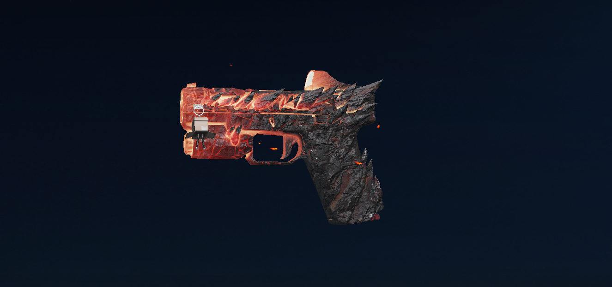
Это скин на Glock - Расплавленное ядро